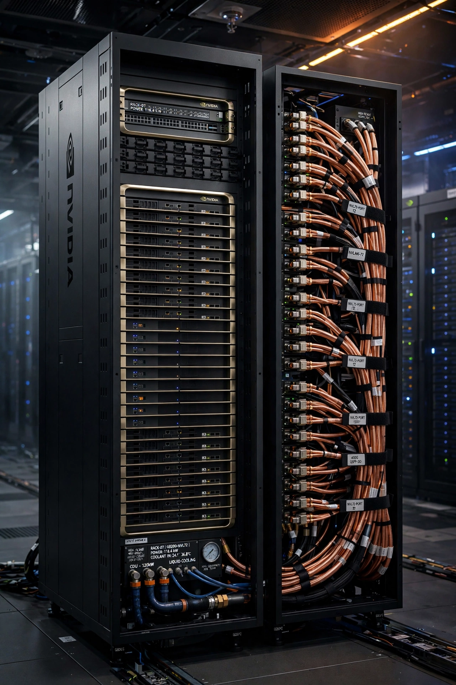

NVIDIA's full-stack data center platform — Blackwell GPUs, NVLink systems, networking and software — trains and serves the world's largest AI models.
Explore the Platform
B200/GB200 systems with second-gen Transformer Engine and FP4 inference — succeeded on the roadmap by the Vera Rubin platform.
Reference architectures and turnkey supercomputers, from a single DGX to DGX SuperPOD clusters.
InfiniBand and Spectrum-X Ethernet, ConnectX NICs and BlueField DPUs — the fabric that makes a cluster one computer.
The parallel-computing platform every AI framework targets, plus enterprise microservices like NIM for deploying models.
Arm-based server processors paired with GPUs in GB200 for memory-hungry AI and HPC workloads.
Digital twins for factories, robotics training and scientific visualisation on RTX and OVX systems.
The cadence is annual now: Hopper (H100) built the first AI factories, Blackwell (B200/GB200) scaled them, and the Vera Rubin platform is next on the published roadmap. Road-map generations and configurations here are as remembered.